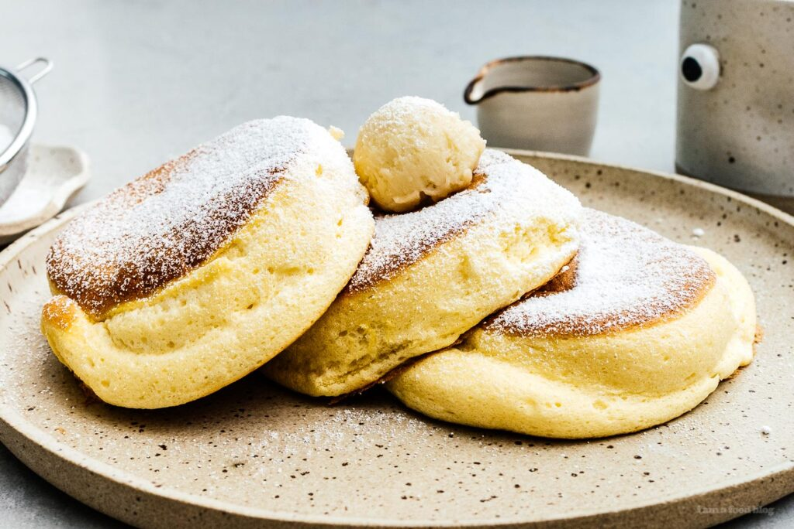

Japanes Souffle Pancakes

Ingredients
- 2 eggs
- 1 Tbsp (14 g) whole milk
- 1 tsp (3 g) vanilla extract
- ¼ cup (30 g) cake flour
- ¾ tsp (3 g) baking powder
- ½ tsp (1 g) fine sea salt
- 2 ⅕ Tbsp (35 g) granulated sugar
- Water
- Whipped cream
- Powdered sugar
- Butter
- Maple Syrup
Steps
- Start by cracking the eggs into a medium bowl and separate them into two separate bowls. One for the yolks, and one for the whites.
- To the yolks, add in whole milk, vanilla extract, and whisk together. Sift in cake flour, baking powder, and fine sea salt. Whisk to combine.
- Separately begin beating the egg whites with an electric beater. Once soft peaks form, slowly add in granulated sugar at a time until all is added. Beat until stiff peaks form.
- Fold in a ¼ of the meringue into the yolk mixture until fully incorporated.
- Repeat this process a quarter at a time until all of the meringue has been added.
- Transfer to a piping bag.
- Heat a nonstick skillet over low heat until hot. Spray with cooking oil and wipe off any excess.
- Pipe two evenly sized mounds along with a spoonful of water. Immediately cover and let steam, and cook for 5 minutes.
- Lift the lid and pipe another large mound on top of the two mounds. Add another spoonful of water, cover, and cook for an additional 3-4 minutes.
- Carefully roll/flip the pancake, add another spoonful of water, and cover. Cook for 3-4 minutes.
- Remove from the pan, and add to a plate. Top with whipped cream, butter, and a generous dusting of powdered sugar.
Back to Homepage